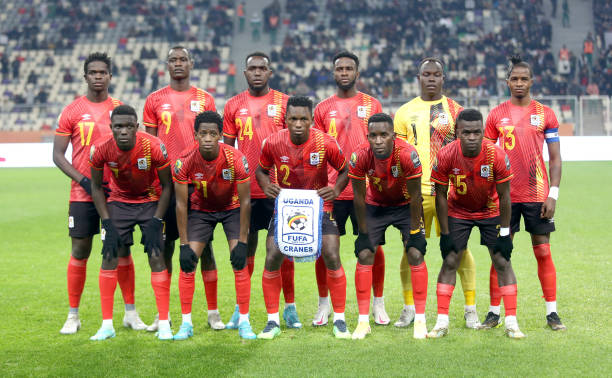

Uganda has always been hosting the olympics football league
since 1977 and the idea was brought up by the football federation
of uganda headed by engineer moses magogo. today, the olympics footall
league will be held at st. mary's stadium, kitende.
